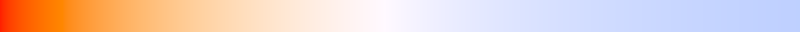

Physical light and camera units
Why use physical light and camera units?
Godot uses arbitrary units for many physical properties that apply to light like color, energy, camera field of view, and exposure. By default, these properties use arbitrary units, because using accurate physical units comes with a few tradeoffs that aren't worth it for many games. As Godot favors ease of use by default, physical light units are disabled by default.
Advantages of physical units
If you aim for photorealism in your project, using real world units as a basis can help make things easier to adjust. References for real world materials, lights and scene brightness are wildly available on websites such as Physically Based.
Using real world units in Godot can also be useful when porting a scene from other 3D software that uses physical light units (such as Blender).
Disadvantages of physical units
The biggest disadvantage of using physical light units is you will have to pay close attention to the dynamic range in use at a given time. You can run into floating point precision errors when mixing very high light intensities with very low light intensities.
In practice, this means that you will have to manually manage your exposure settings to ensure that you aren't over-exposing or under-exposing your scene too much. Auto-exposure can help you balance the light in a scene to bring it into a normal range, but it can't recover lost precision from a dynamic range that is too high.
Using physical light and camera units will not automatically make your project look better. Sometimes, moving away from realism can actually make a scene look better to the human eye. Also, using physical units requires a greater amount of rigor compared to non-physical units. Most benefits of physical units can only be obtained if the units are correctly set to match real world reference.
Note
Physical light units are only available in 3D rendering, not 2D.
Setting up physical light units
Physical light units can be enabled separately from physical camera units.
To enable physical light units correctly, there are 4 steps required:
Enable the project setting.
Configure the camera.
Configure the environment.
Configure Light3D nodes.
Since physical light and camera units only require a handful of calculations to handle unit conversion, enabling them doesn't have any noticeable performance impact on the CPU. However, on the GPU side, physical camera units currently enforce depth of field. This has a moderate performance impact. To alleviate this performance impact, depth of field quality can be decreased in the advanced Project Settings.
Enable the project setting
Open the Project Settings, enable the Advanced toggle then enable Rendering > Lights And Shadows > Use Physical Light Units. Restart the editor.
Configure the camera
Warning
When physical light units are enabled and if you have a WorldEnvironment node in your scene (i.e. the editor Environment is disabled), you must have a CameraAttributes resource assigned to the WorldEnvironment node. Otherwise, the 3D editor viewport will appear extremely bright if you have a visible DirectionalLight3D node.
On the Camera3D node, you can add a CameraAttributes resource to its Attributes property. This resource is used to control the camera's depth of field and exposure. When using CameraAttributesPhysical, its focal length property is also used to adjust the camera's field of view.
When physical light units are enabled, the following additional properties become available in CameraAttributesPhysical's Exposure section:
Aperture: The size of the aperture of the camera, measured in f-stops. An f-stop is a unitless ratio between the focal length of the camera and the diameter of the aperture. A high aperture setting will result in a smaller aperture which leads to a dimmer image and sharper focus. A low aperture results in a wide aperture which lets in more light resulting in a brighter, less-focused image.
Shutter Speed: The time for shutter to open and close, measured in inverse seconds (
1/N). A lower value will let in more light leading to a brighter image, while a higher value will let in less light leading to a darker image. When getting or setting this property with a script, the unit is in seconds instead of inverse seconds.Sensitivity: The sensitivity of camera sensors, measured in ISO. A higher sensitivity results in a brighter image. When auto exposure is enabled, this can be used as a method of exposure compensation. Doubling the value will increase the exposure value (measured in EV100) by 1 stop.
Multiplier: A non-physical exposure multiplier. Higher values will increase the scene's brightness. This can be used for post-processing adjustments or for animation purposes.
The default Aperture value of 16 f-stops is appropriate for outdoors at daytime (i.e. for use with a default DirectionalLight3D). For indoor lighting, a value between 2 and 4 is more appropriate.
Typical shutter speed used in photography and movie production is 1/50 (0.02 seconds). Night-time photography generally uses a shutter around 1/10 (0.1 seconds), while sports photography uses a shutter speed between 1/250 (0.004 seconds) and 1/1000 (0.001 seconds) to reduce motion blur.
In real life, sensitivity is usually set between 50 ISO and 400 ISO for daytime outdoor photography depending on weather conditions. Higher values are used for indoor or night-time photography.
Note
Unlike real life cameras, the adverse effects of increasing ISO sensitivity or decreasing shutter speed (such as visible grain or light trails) are not simulated in Godot.
See Setting up physical camera units for a description of CameraAttributesPhysical properties that are also available when not using physical light units.
Configure the environment
Warning
The default configuration is designed for daytime outdoor scenes. Night-time and indoor scenes will need adjustments to the DirectionalLight3D and WorldEnvironment background intensity to look correct. Otherwise, positional lights will be barely visible at their default intensity.
If you haven't added a WorldEnvironment and Camera3D node to the current scene yet, do so now by clicking the 3 vertical dots at the top of the 3D editor viewport. Click Add Sun to Scene, open the dialog again then click Add Environment to Scene.
After enabling physical light units, a new property becomes available to edit in the Environment resource:
Background Intensity: The background sky's intensity in nits (candelas per square meter). This also affects ambient and reflected light if their respective modes are set to Background. If a custom Background Energy is set, this energy is multiplied by the intensity.
Configure the light nodes
After enabling physical light units, 2 new properties become available in Light3D nodes:
Intensity: The light's intensity in lux (DirectionalLight3D) or lumens (OmniLight3D/SpotLight3D/AreaLight3D). If a custom Energy is set, this energy is multiplied by the intensity.
Temperature: The light's color temperature defined in Kelvin. If a custom Color is set, this color is multiplied by the color temperature.
OmniLight3D/SpotLight3D/AreaLight3D intensity
Lumens are a measure of luminous flux, which is the total amount of visible light emitted by a light source per unit of time.
For SpotLight3Ds, we assume that the area outside the visible cone is surrounded by a perfect light absorbing material. Accordingly, the apparent brightness of the cone area does not change as the cone increases and decreases in size.
A typical household lightbulb can range from around 600 lumens to 1200 lumens. A candle is about 13 lumens, while a streetlight can be approximately 60000 lumens.
DirectionalLight3D intensity
Lux is a measure pf luminous flux per unit area, it is equal to one lumen per square metre. Lux is the measure of how much light hits a surface at a given time.
With DirectionalLight3D, on a clear sunny day, a surface in direct sunlight may receive approximately 100000 lux. A typical room in a home may receive approximately 50 lux, while the moonlit ground may receive approximately 0.1 lux.
Color temperature
6500 Kelvin is white. Higher values result in colder (bluer) colors, while lower values result in warmer (more orange) colors.
The sun on a cloudy day is approximately 6500 Kelvin. On a clear day, the sun is between 5500 to 6000 Kelvin. On a clear day at sunrise or sunset, the sun ranges to around 1850 Kelvin.

Color temperature chart from 1,000 Kelvin (left) to 12,500 Kelvin (right)
Other Light3D properties such as Energy and Color remain editable for animation purposes, and when you occasionally need to create lights with non-realistic properties.
Setting up physical camera units
Physical camera units can be enabled separately from physical light units.
After adding a CameraAttributesPhysical resource to the Camera Attributes property of a Camera3D node, some properties such as FOV will no longer be editable. Instead, these properties are now controlled by the CameraAttributesPhysical's properties, such as focal length and aperture.
CameraAttributesPhysical offers the following properties in its Frustum section:
Focus Distance: Distance from camera of object that will be in focus, measured in meters. Internally, this will be clamped to be at least 1 millimeter larger than the Focal Length.
Focal Length: Distance between camera lens and camera aperture, measured in millimeters. Controls field of view and depth of field. A larger focal length will result in a smaller field of view and a narrower depth of field meaning fewer objects will be in focus. A smaller focal length will result in a wider field of view and a larger depth of field, which means more objects will be in focus. This property overrides the Camera3D's FOV and Keep Aspect properties, making them read-only in the inspector.
Near/Far: The near and far clip distances in meters. These behave the same as the Camera3D properties of the same name. Lower Near values allow the camera to display objects that are very close, at the cost of potential precision (Z-fighting) issues in the distance. Higher Far values allow the camera to see further away, also at the cost of potential precision (Z-fighting) issues in the distance.
The default focal length of 35 mm corresponds to a wide angle lens. It still results in a field of view that is noticeably narrower compared to the default "practical" vertical FOV of 75 degrees. This is because non-gaming use cases such as filmmaking and photography favor using a narrower field of view for a more cinematic appearance.
Common focal length values used in filmmaking and photography are:
Fisheye (ultrawide angle): Below 15 mm. Nearly no depth of field visible.
Wide angle: Between 15 mm and 50 mm. Reduced depth of field.
Standard: Between 50 mm and 100 mm. Standard depth of field.
Telephoto: Greater than 100 mm. Increased depth of field.
Like when using the Keep Height aspect mode, the effective field of view depends on the viewport's aspect ratio, with wider aspect ratios automatically resulting in a wider horizontal field of view.
Automatic exposure adjustment based on the camera's average brightness level can also be enabled in the Auto Exposure section, with the following properties:
Min Sensitivity: The darkest brightness the camera is allowed to get to, measured in EV100.
Max Sensitivity: The brightest the camera is allowed to get to, measured in EV100.
Speed: The speed of the auto exposure effect. Affects the time needed for the camera to perform auto exposure. Higher values allow for faster transitions, but the resulting adjustments may look distracting depending on the scene.
Scale: The scale of the auto exposure effect. Affects the intensity of auto exposure.
EV100 is an exposure value (EV) measured at an ISO sensitivity of 100. See this table for common EV100 values found in real life.